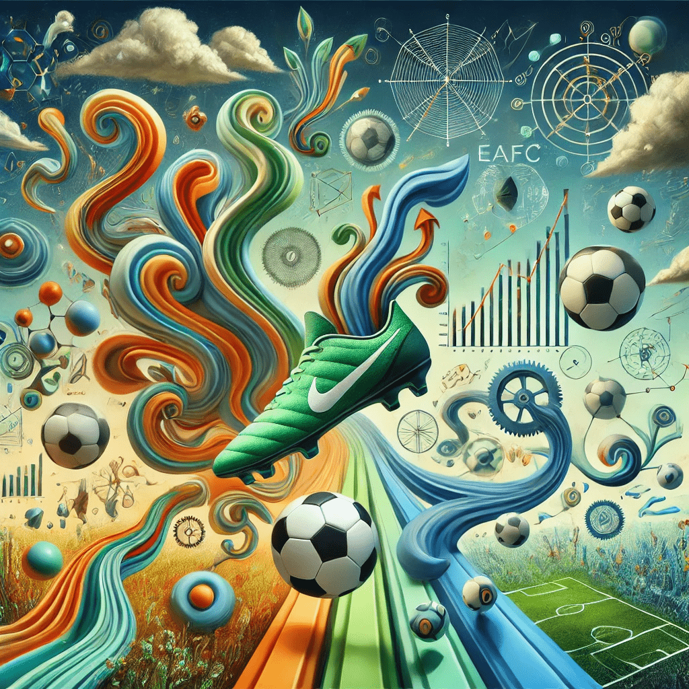
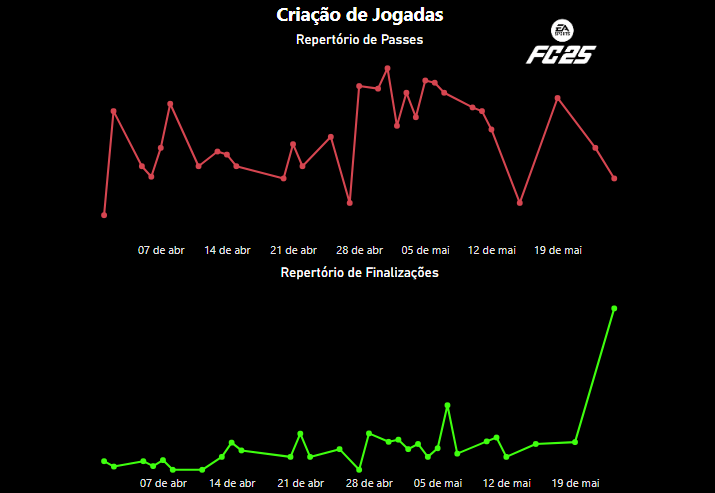

Leitura Rápida!
Aumente seu Repertório!

Tanto no futebol real quanto na vida, quem tem mais ferramentas, recursos e habilidades possui mais chances de aumentar seus resultados, estando apto a enfrentar os problemas que surgem ao longo do tempo com mais facilidade.
No EAFC não é diferente. O repertório de jogadas que um jogador possui faz parte de um conjunto de habilidades que podem fazer a diferença. Imagine que você é um jogador que é especialista na bola de área. Se tivesse um ranking (e nós temos, rs) dos melhores jogadores nesse quesito, você estaria no topo. Mas e se você só soubesse fazer com maestria essa jogada? Quando enfrentasse um jogador que já sabe defender ou um que consegue sacar suas manhas e se adaptar no meio da partida ao seu ponto forte, fica complicado, uma vez que todas as suas fichas estão naquela jogada.
Sendo assim, eu prezo por uma filosofia semelhante ao futebol e à vida: quanto mais possibilidades você tem, mais facilidade terá para driblar as adversidades. Assim, criei uma métrica bem interessante. Ela mede quantos tipos de jogadas diferentes você consegue criar por partida. Quanto maior essa métrica, maior é o seu repertório e menos dependente você é. Esse indicador pode ser visto tanto em relação ao tipo de finalização quanto a passes. Assim, você consegue acompanhar, controlar e aumentar seu repertório ao longo do tempo.
Quando comecei a jogar EAFC no fim do ano passado, senti muita necessidade de aumentar minha diversidade de jogadas e, assim, comecei a coletar e analisar meus próprios dados e a desenvolver métricas que me ajudaram a evoluir. Veja uma imagem da minha evolução no repertório de finalizações e passes ao longo do tempo.

No serviço que ofertamos, EAFC IA Experience é um indicador de destaque. Inicialmente, o produto foi desenvolvido apenas como hobby pessoal, mas, com o tempo e o potencial que vi nele, resolvi disponibilizá-lo para os amantes de EAFC por um preço simbólico.